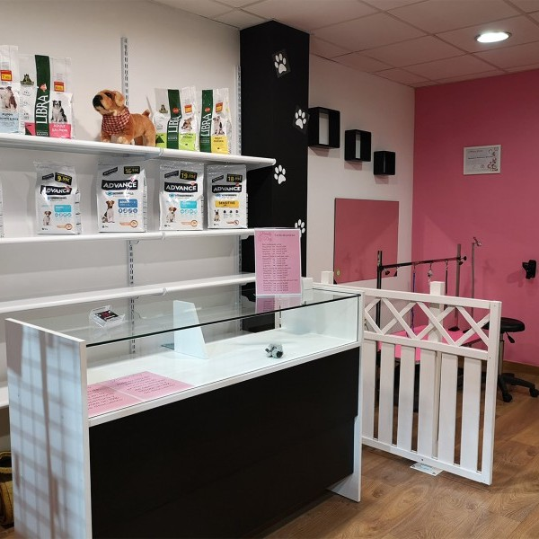

Servicios de Peluquería Canina de Alta Calidad

Elegancia Peluda
Peluquería Especializada

Peluquería Canina de Lujo
Transformando Pelos en Obras de Arte
Peluquería Especializada
Transformando Pelos en Obras de Arte

El corte de pelo implica recortar y dar forma al pelaje de acuerdo con las preferencias del dueño y las necesidades de la raza. Se utilizan tijeras, maquinillas de afeitar y otros utensilios de estilismo para lograr un corte preciso. El estilizado se refiere a dar un aspecto específico al pelaje del perro. Puede incluir estilos como el "corte de león" para los perros de raza como los caniches, el "corte Schnauzer" o incluso cortes a medida según las preferencias del dueño. El estilizado a menudo incluye desenredar y eliminar los nudos del pelaje, lo que puede ser crucial para razas de pelo largo o rizado. El despunte se realiza para dar forma y textura al pelaje. Durante el corte y el estilizado, los estilistas caninos profesionales prestan atención a los detalles para garantizar que el pelaje esté uniforme, bien cortado y que se logre el estilo deseado.Realzando la Belleza Canina y el Bienestar General En Nudipets, sabemos que la apariencia de tu perro es una parte importante de lo que hace que sean únicos y especiales para ti. Nuestros servicios de corte y estilizado están diseñados no solo para resaltar la belleza de tus amigos peludos, sino también para mantener su salud y bienestar general. Permítenos llevarte a un viaje a través de la magia del corte y estilizado de perros, donde la forma se encuentra con la función y donde la elegancia se une al bienestar. Nuestros estilistas caninos son artistas en su oficio. Entendemos que cada perro es especial y tiene necesidades individuales. Nuestros estilistas colaboran contigo para lograr el aspecto que deseas para tu mascota. Ya sea un look clásico y elegante o algo más atrevido y moderno, trabajamos juntos para encontrar el estilo perfecto. Para las razas con pelaje largo o rizado, el desenredado es esencial. Eliminamos suavemente los nudos y aseguramos que el pelaje esté limpio, saludable y sin enredos.
El corte de pelo implica recortar y dar forma al pelaje de acuerdo con las preferencias del dueño y las necesidades de la raza. Se utilizan tijeras, maquinillas de afeitar y otros utensilios de estilismo para lograr un corte preciso. El estilizado se refiere a dar un aspecto específico al pelaje del perro. Puede incluir estilos como el "corte de león" para los perros de raza como los caniches, el "corte Schnauzer" o incluso cortes a medida según las preferencias del dueño. El estilizado a menudo incluye desenredar y eliminar los nudos del pelaje, lo que puede ser crucial para razas de pelo largo o rizado. El despunte se realiza para dar forma y textura al pelaje. Durante el corte y el estilizado, los estilistas caninos profesionales prestan atención a los detalles para garantizar que el pelaje esté uniforme, bien cortado y que se logre el estilo deseado.Realzando la Belleza Canina y el Bienestar General En Nudipets, sabemos que la apariencia de tu perro es una parte importante de lo que hace que sean únicos y especiales para ti. Nuestros servicios de corte y estilizado están diseñados no solo para resaltar la belleza de tus amigos peludos, sino también para mantener su salud y bienestar general. Permítenos llevarte a un viaje a través de la magia del corte y estilizado de perros, donde la forma se encuentra con la función y donde la elegancia se une al bienestar. Nuestros estilistas caninos son artistas en su oficio. Entendemos que cada perro es especial y tiene necesidades individuales. Nuestros estilistas colaboran contigo para lograr el aspecto que deseas para tu mascota. Ya sea un look clásico y elegante o algo más atrevido y moderno, trabajamos juntos para encontrar el estilo perfecto. Para las razas con pelaje largo o rizado, el desenredado es esencial. Eliminamos suavemente los nudos y aseguramos que el pelaje esté limpio, saludable y sin enredos.